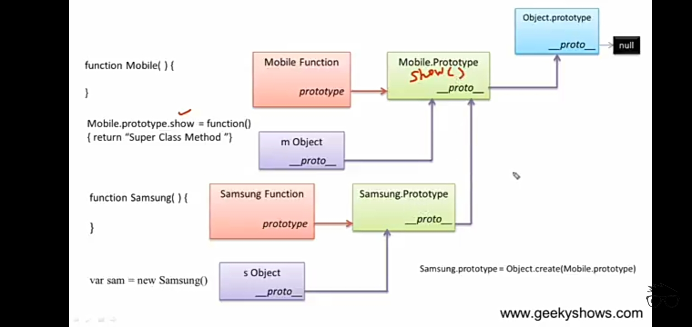

======>

function Mobile(){
//instance memeber
this.a = 10;
}
var m = new Mobile();
//prototype member of Mobile
Mobile.prototype.z = 30;
//prototype memeber inheritance
Samgsung.prototype = Object.create(Mobile.prototype);
Samgsung.prototype.constructor = Samgsung;
function Samgsung(){
//instance memeber
this.b = 20;
Mobile.call(this);
}
var s = new Samgsung();
//access instance member
var mobile_prop = s.b; //own property
var x = document.getElementById("Mobile_prop");
x=mobile_prop;
document.write(" Sangsung property: "+x+"
"); //own property
document.write("Mobile Instance member: "+s.a+"
"); //Mobile property
//prototype inheritance
var y = document.getElementById("samgsung_prop");
var samgsung_prop = s.z;
y=samgsung_prop;
document.write("Mobile Prototype member: "+y);